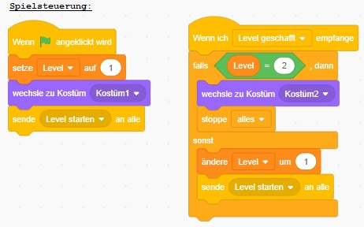

Wie lässt man eine Spielfigur springen und Levels erreichen - Version 14
Wir könnten weitere Levels hinzufügen, aber hier beenden wir das Spiel nach Level 2
- Die Figur Spielsteuerung bekommt ein neues Kostüm mit dem Text "Spielende"
- Die Figur Spielsteuerung überpüft ob Level 2 beendet wurde und beendet dann das Spiel"
- Wenn das zutrifft:
- Die Figur Spielsteuerung wechselt zum Kostüm mit dem Text "Spielende"
- Die Figur Spielsteuerung beendet dann das Spiel"
